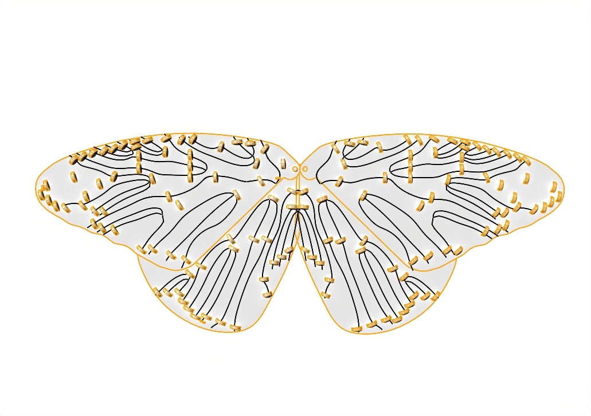
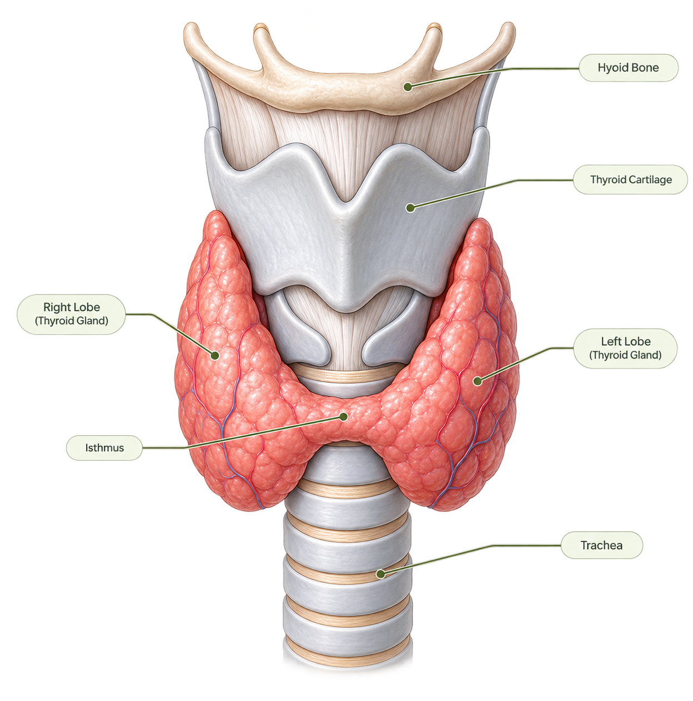

Research-creation · computational arts · multispecies affect
POLYTOPE OF SYNTHETIC EMOTIONS
Corpus Hormē: affect between body, environment, and machine
Hrysovalanti Fereniki MaherasPhD Candidate, Digital MediaSchool of the Arts, Media, Performance & Design
What if emotion does not originate within the body, but emerges through its exchanges with the environment?
01 / PREMISE
Emotion is not contained.
Corpus Hormē treats affect as an embodied, relational, and environmentally contingent process. Heat, light, movement, sound, and atmosphere do not merely surround a body: they participate in its physiological state.
Research question How can computational art reveal and engage the imperceptible biological processes involved in the synthesis of emotion across species?

Corpus Hormē Kinetic wing study: a material interface for light, motion, and environmental response.
02 / BIOLOGICAL LENS
The monarch as model
The monarch’s body is read as an Umwelt: a world shaped through solar orientation, temperature, sensory feedback, hormonal regulation, and adaptive movement.
Input solar radiation + ambient heat
Body sensory + physiological regulation
Action orientation + movement
Feedback changed environmental relation
03 / RELATIONAL SYSTEM
From environmental signal to synthetic affect
Choose a stage to trace the translation.
04 / NON-INVASIVE METHOD
Observe → abstract → simulate → materialize
Observeenvironmental and movement relations
Abstractphysiological processes as dynamic variables
Simulatecross-species agents and feedback loops
Materializecomputed states as light, sound, and kinetics
Computer simulation replaces invasive experimentation with speculative, ethically driven modelling.

solar rhythm
hormonal flow
affective state
Cross-species bridge. The research places monarch hormonal regulation in dialogue with the human thyroid—not to equate the species, but to model shared relational principles.
05 / COMPUTATIONAL SYNTHESIS
Emotion becomes a relation.
Biochemical and neural processes are translated into interacting artificial-life agents. Their states emerge from exchanges rather than from fixed emotional labels.
signal + memory + relation + feedback → emergent behaviour
06 / REALIZATION
Corpus Hormē becomes a polytope.
The butterfly sculpture is a kinetic interface within a larger transparent architecture. Programmable light translates hormonal flows; sound expresses neural transmission and feedback; suspended structures distribute those signals through space.